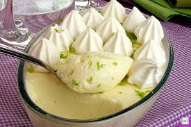

Peixe Assado

Ingredientes
- 1 lata de leite condensado;
- 1 lata de creme de leite;
- 1/2 copo (americano) de suco puro de limão;
- Tempero seco a gosto;
- bis de limão;
Modo de Preparo
No liquidificador, bata o leite condensado e o creme de leite por 3 minutos
Acrescente aos poucos o suco de limão e continue batendo.
Despeje o mousse em um refratário e leve à geladeira.
Na hora de servir, triture o bis e coloque por cima do mousse para decorar.
Se quiser o decore!!! ficará bonito e gostoso!!!